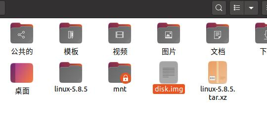

制作 Linux 系统教程
原著：LNJ
维护：RDPStudio
原著：LNJ
维护：RDPStudio
准备
更新源：
sudo apt-get update
安装 Linux 编译内核的环境
sudo apt-get install git fakeroot build-essential ncurses-dev xz-utils libssl-dev bc flex libelf-dev bison
下载 Linux 内核
{kind=link}
开始
创建256M大小的磁盘文件
dd if=/dev/zero of=disk.img bs=1M count=256
磁盘大小根据内核大小来定
对磁盘分区，整个磁盘只建一个分区
fdisk disk.img

使用命令，可以看到该磁盘只有一个主分区，是从第2048个扇区开始
fdisk -l disk.img
使用losetup命令将该分区与一个/dev/loop7设备进行关联
sudo losetup -o 1048576 /dev/loop7 disk.img
-o表示该分区在disk.img的偏移量（字节为单，即2048 x 512 = 1048576 )
这里将分区格式化为ext3
sudo mkfs.ext3 /dev/loop7
格式可为：ext2、ext3、ext4
将该分区挂载到mnt目录
sudo mkdir mnt
sudo mount -t ext3 /dev/loop7 ./mnt/
注意格式：若在之前输入ext4，此处也应为ext4。否则会报错误。

安装grub
sudo grub-install --boot-directory=./mnt/boot/ --target=i386-pc --modules=part_msdos disk.img
将下载好的 Linux 内核移到主目录，然后提取出来
（图片未能及时更新，但不影响最后结果）
右键在终端打开
配置编译x86_64内核和拷贝到distk.img磁盘的 boot/目录
make x86_64_defconfig
make bzImage -j4
sudo cp arch/x86/boot/bzImage ~/mnt/boot/
制作initrd
sudo mkinitramfs -o ./mnt/boot/initrd

使用root权限编写grub.cfg，让Grub引导系统运行
cat - > ./mnt/boot/grub/grub.cfg << EOF
set timeout=10
menuentry 'liangnijian' {
linux (hd0,msdos1)/boot/bzImage console=tty0
initrd (hd0,msdos1)/boot/initrd
}
EOF
set timeout=10 指的是：默认10秒后进入系统。
menuentry '你想要的系统名称（仅英文）' {
（图片未能及时更新，但不影响最后结果）
将建立的文件内容刷新到disk.img磁盘文件上
umount /dev/loop7
losetup -d /dev/loop7
如何将制作完成的 disk.img复制到移动设备，在Windows上进行刻录。
注：此镜像仅支持BIOS启动。
结束